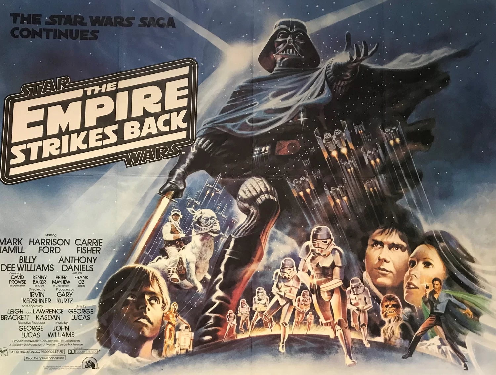
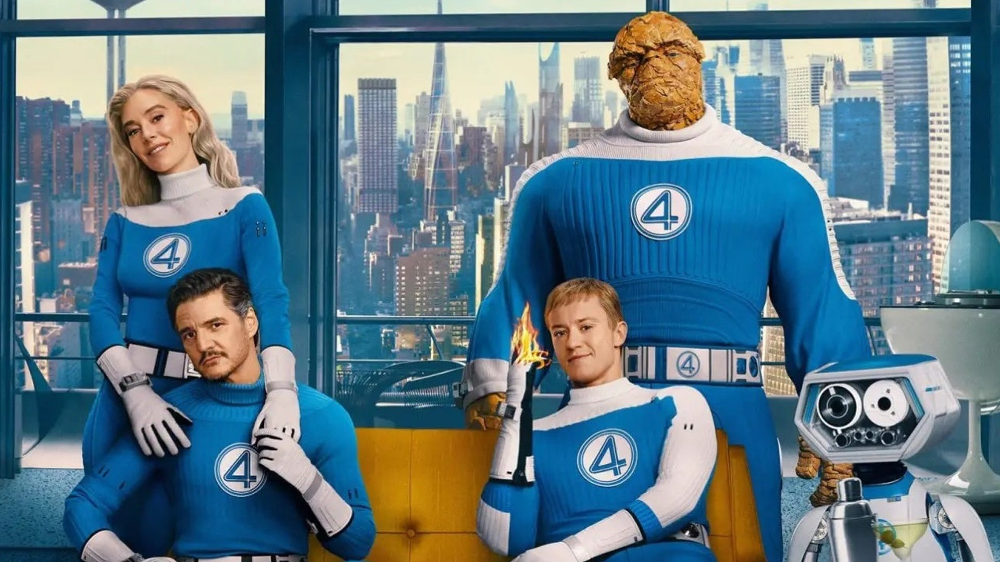

Did you know the video wasn’t supposed to be called The Spainlands? Or that it was initially intended to be a
Marvel-style film?
A Marvel-style film refers to a movie similar to those produced by Marvel Studios, typically featuring superheroes, action-packed sequences, interconnected storylines, and a mix of humor and drama.
Welcome to the behind-the-scenes of the first version of An Erasmus Movie.
When I decided to create An Erasmus Movie 2, the need for a title came with the first version of the opening. Today, very little of that idea remains, but I want to share it with you anyway.
How do you choose a film title? I considered several options, and here are the discarded ones:
- An Erasmus Movie 2 –
The Erasmus Strikes Back
The reference is a play on “The Empire Strikes Back”, the famous second film of the original Star Wars trilogy, implying a sequel with a sense of adventure and continuity.

- An Erasmus Movie 2 – Another Adventure
The idea of The SpainLands came when I read about
The JoJoLands
JoJo’s Bizarre Adventure is a long-running manga series about the Joestar family and their adventures, often involving supernatural powers called Stands. The ninth part follows Jodio Joestar, a clever and determined young hero, who faces dangerous enemies and mysterious challenges. His Stand, November Rain, gives him unique abilities that make his journey even more intense and unpredictable.
 Well… just replace “JoJo” with “Spain,” and the title was born almost by itself.
Well… just replace “JoJo” with “Spain,” and the title was born almost by itself.
Clip Recording
Originally, a cinematic introduction was planned, recorded at my house, with the theme from
Fantastic Four
The Fantastic Four: First Steps (2025) is a Marvel Studios film reintroducing Reed Richards, Sue Storm, Johnny Storm, and Ben Grimm in a retro-futuristic 1960s-inspired setting. The plot follows their battle against Galactus and Silver Surfer, featuring a strong cast including Pedro Pascal and Vanessa Kirby, and it received praise for action, humor, and cast chemistry.

a movie I had recently seen in theaters.
Perhaps all of this makes me realize how much the media we consume actually inspires us, more than we think.